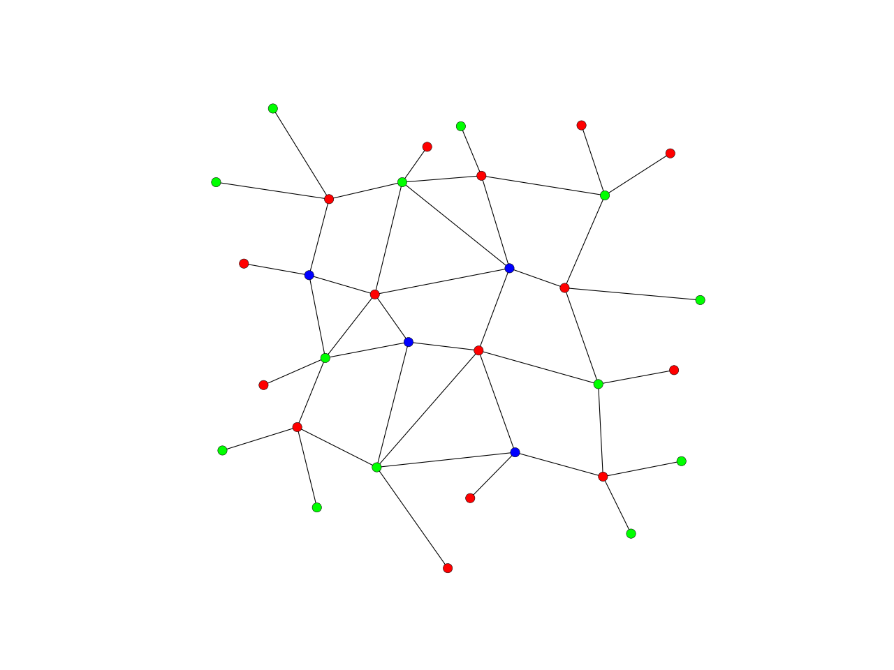

vertex_coloring
-
compas.topology.vertex_coloring(adjacency)[source] Color the vertices of a network such that no two colors are adjacent.
- Parameters
network (compas.datastructures.Network) – The network object.
Notes
For more info, see 1.
References
- 1
Chu-Carroll, M. Graph Coloring Algorithms. Available at: http://scienceblogs.com/goodmath/2007/06/28/graph-coloring-algorithms-1/.
Warning
This is a greedy algorithm, so it might be slow for large networks.
Examples
import compas from compas.datastructures import Network from compas.plotters import NetworkPlotter from compas.topology import vertex_coloring network = Network.from_obj(compas.get('grid_irregular.obj')) key_color = vertex_coloring(network.adjacency) colors = ['#ff0000', '#00ff00', '#0000ff'] plotter = NetworkPlotter(network) plotter.draw_vertices(facecolor={key: colors[key_color[key]] for key in network.vertices()}) plotter.draw_edges() plotter.show()
